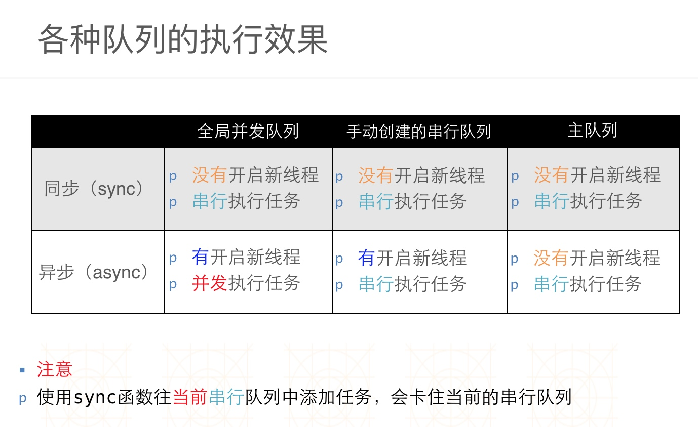

Copyright © 2015 Powered by MWeb, Theme used GitHub CSS.
1，/** 串行队列,同步的任务 */
// 1.创建串行队列，下面两种方式都可以
dispatch_queue_t q = dispatch_queue_create("itcast.download", DISPATCH_QUEUE_SERIAL);
dispatch_queue_t q = dispatch_queue_create("itcast.download", NULL);
// 2. 添加任务
for (int i = 0; i < 10; i++)
{
// 决定任务的类型:同步的/异步的
// dispatch_sync 同步
// dispatch_async 异步的
dispatch_sync(q, ^
{
NSLog(@"下载图片 %@ %d", [NSThread currentThread], i);
});
}
// 释放操作仅在 MRC中使用
// dispatch_release(q);
2，/** 串行队列,异步任务 */
// 1. 队列
dispatch_queue_t q = dispatch_queue_create("itcast.download", NULL);
// 2. 任务
for (int i = 0; i < 10; i++)
{
dispatch_async(q, ^
{
NSLog(@"%@ %d", [NSThread currentThread], i);
});
}
3， /** 并发队列,异步任务 */
// 1. 队列(并发) 先进先出
dispatch_queue_t q = dispatch_queue_create("itcast", DISPATCH_QUEUE_CONCURRENT);
// 2. 任务
// 具体在哪一条上面工作,程序员不用关心
for (int i = 0; i < 100; i++)
{
dispatch_async(q, ^
{
NSLog(@"%@ %d", [NSThread currentThread], i);
});
}
4， /** 并发队列,同步方法 */
// 1. 队列(并发) 先进先出
dispatch_queue_t q = dispatch_queue_create("itcast", DISPATCH_QUEUE_CONCURRENT);
// 2. 任务
for (int i = 0; i < 10; i++)
{
dispatch_sync(q, ^
{
NSLog(@"%@ %d", [NSThread currentThread], i);
});
}
5， /** 主队列,异步方法 */
// 1. 队列
dispatch_queue_t q = dispatch_get_main_queue();
// 2. 异步方法
for (int i = 0; i < 10; i++)
{
// 顺序执行的!
dispatch_async(q, ^
{
NSLog(@"下载完成 %@ %d", [NSThread currentThread], i);
});
}
6， /** 主队列,同步方法,会死锁!!! */
// 1. 队列
dispatch_queue_t q = dispatch_get_main_queue();
// 2. 同步方法
for (int i = 0; i < 10; i++)
{
// 顺序执行的!
dispatch_sync(q, ^
{
NSLog(@"下载完成 %@ %d", [NSThread currentThread], i);
});
}
7，#pragma mark - 同步方法的应用场景
/** 同步方法只会用在并发队列中 */
- (void)gcdDemo7
{
// 1. 队列
dispatch_queue_t q = dispatch_queue_create("itcast", DISPATCH_QUEUE_CONCURRENT);
// 2. 添加任务
/**
下载付费小说
1. 用户登录
2. 下载小说(3)
*/
dispatch_async(q, ^
{
NSLog(@"%@", [NSThread currentThread]);
// 同步任务,在后台线程中,去阻塞住其他异步任务
dispatch_sync(q, ^
{
NSLog(@"用户登录 %@", [NSThread currentThread]);
});
for (int i = 0; i < 3; i++)
{
dispatch_async(q, ^
{
NSLog(@"下载小说 %d %@", i, [NSThread currentThread]);
});
}
});
}
8，全局队列
#pragma mark - 全局队列
// 全局队列是一个并发队列
/**
和自己创建的队列的区别
1> 没有名字的区别,用于崩溃报告!
2> 在使用C语言框架时,通常创建对象的函数出现alloc,create,retain,copy单词,都需要考虑release
不过在GCD中,ARC同样不需要release
MRC使用dispatch_release释放对象
*/
- (void)gcdDemo8
{
// 队列
/**
参数
1> 优先级
#define DISPATCH_QUEUE_PRIORITY_HIGH 2 高
#define DISPATCH_QUEUE_PRIORITY_DEFAULT 0 默认
#define DISPATCH_QUEUE_PRIORITY_LOW (-2) 低
#define DISPATCH_QUEUE_PRIORITY_BACKGROUND INT16_MIN 后台
面试题:GCD中真正一共有几个队列?(仅供参考!)
1) 主队列
2) 串行队列
3) 高优先级并发队列
4) 默认并发队列 => 用户创建的并发队列
5) 低并发队列
6) 后台并发队列
2> 0
*/
dispatch_queue_t q = dispatch_get_global_queue(DISPATCH_QUEUE_PRIORITY_DEFAULT, 0);
// 任务
for (int i = 0; i < 10; i++)
{
dispatch_async(q, ^
{
NSLog(@"%@, %d", [NSThread currentThread], i
);
}
}
dispatch_after( dispatch_time(DISPATCH_TIME_NOW, (int64_t)(<#delayInSeconds#> * NSEC_PER_SEC)), dispatch_get_main_queue(), ^{
<#code to be executed after a specified delay#>
});
dispatch_after(<#dispatch_time_t when#>, <#dispatch_queue_t queue#>, <#^(void)block#>);
dispatch_once是线程安全的!并没有用到互斥锁!
static dispatch_once_t onceToken;
dispatch_once(&onceToken, ^{
<#code to be executed once#>
});
dispatch_once(<#dispatch_once_t *predicate#>, <#^(void)block#>);
//创建一个组
dispatch_group_t group = dispatch_group_create();
// 开启一个任务下载图片1
__block UIImage *image1 = nil;
dispatch_group_async(group, global_queue, ^{
image1 = [self imageWithURL:@"http://news.baidu.com/z/resource/r/image/2014-06-22/2a1009253cf9fc7c97893a4f0fe3a7b1.jpg"];
});
// 开启一个任务下载图片2
__block UIImage *image2 = nil;
dispatch_group_async(group, global_queue, ^{
image2 = [self imageWithURL:@"http://news.baidu.com/z/resource/r/image/2014-06-22/b2a9cfc88b7a56cfa59b8d09208fa1fb.jpg"];
});
//同时执行下载图片1\下载图片2操作
等group中的所有任务都执行完毕, 再回到主线程执行其他操作
dispatch_group_notify(group, main_queue, ^{
self.imageView1.image = image1;
self.imageView2.image = image2;
// 合并
UIGraphicsBeginImageContextWithOptions(CGSizeMake(200, 100), NO, 0.0);
[image1 drawInRect:CGRectMake(0, 0, 100, 100)];
[image2 drawInRect:CGRectMake(100, 0, 100, 100)];
self.bigImageView.image = UIGraphicsGetImageFromCurrentImageContext();
//关闭上下文
UIGraphicsEndImageContext();
});
GCD 是一个具备底层特性的框架，通过它，我们可以构建高层级的抽象行为。如果还有一些我没提到的可以用 GCD 构建的高层行为，请告诉我。
最后补上一张各种队列执行效果图:


Copyright © 2015 Powered by MWeb, Theme used GitHub CSS.